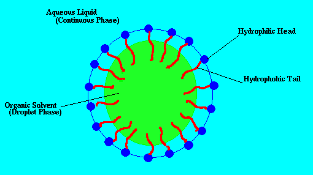
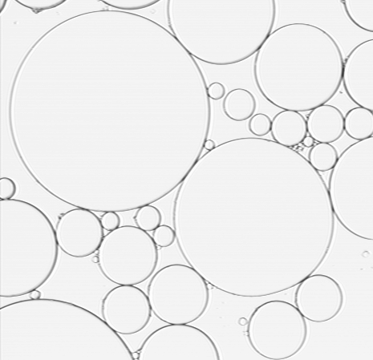
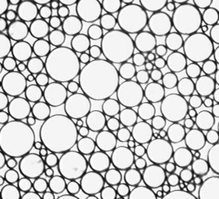
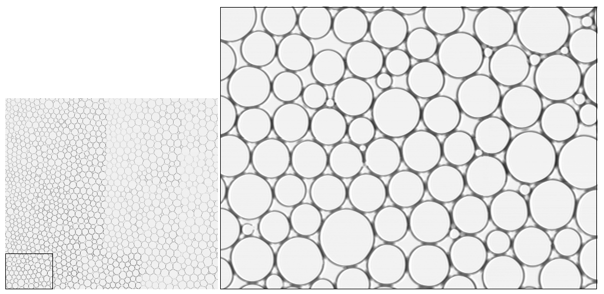

An emulsion is formed when one liquid is dispersed as small droplets within a second, immiscible liquid. Oil and water don't mix on their own — but adding a surfactant (such as SDS, sodium dodecyl sulfate) allows stable droplets to form. The surfactant molecules coat the oil–water interface, preventing droplets from coalescing. Everyday emulsions include mayonnaise, ice cream, and milk.

Schematic of a surfactant-stabilized emulsion droplet. Surfactant molecules (blue with red tails) anchor at the oil–water interface, preventing droplet coalescence.
We used 2D emulsion systems as a model system to understand universal properties of 2D jammed systems. The main objective was to understand the relationship between contact forces and particle mobility during unjamming events. Emulsion droplets were confined between two glass microscope slides separated by a distance slightly less than the diameter of a droplet, then imaged with bright-field microscopy.
The key advantage of 2D emulsions is the ability to simultaneously measure both the mobility and the inter-droplet forces using optical microscopy. When a droplet is isolated it remains circular; when in contact with neighbors the deformation of its shape encodes the magnitude of the contact force. By quantifying deformation we can compute forces between droplets. In the static case, multiple microscope images taken at different locations can be merged to collect large statistics with high accuracy.



The image above (left two panels) shows bright-field microscopy images of 2D water–hexadecane emulsions with average droplet diameter ~100 μm. The right panel shows a merged composite of 45 individual microscope images, enabling statistical analysis of the force network across a large field of view.